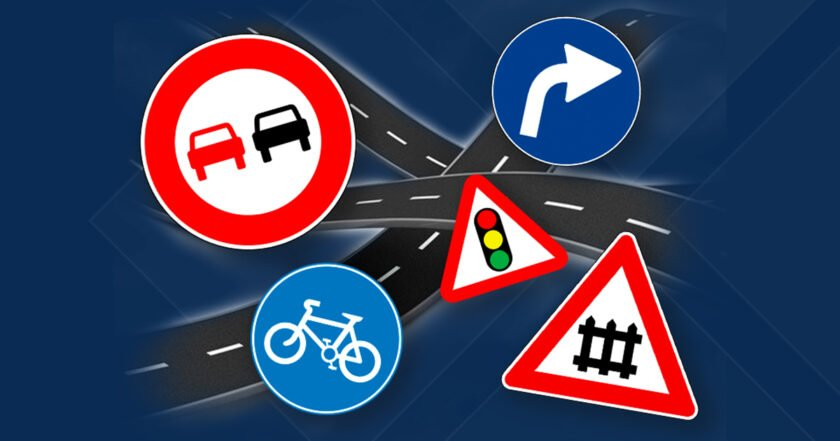

Тест по першому розділу ПДР України 2022

Інструкція, як проходити тестування
- Виберіть одну правильну відповідь під запитанням;
- Нажміть на кнопку "Показати результат";
- В вікні після номеру запитання буде стояти "+" якщо відповідь правильна, і "-" якщо неправильна.
- За кожну правильну відповідь дається 1 бал;
- Результат менше 8 балів - НЕ СКЛАЛИ, 8 і більше - СКЛАДЕНО;
- Щоб скинути результат тестування, натиснути кнопку "Скинути відповіді";